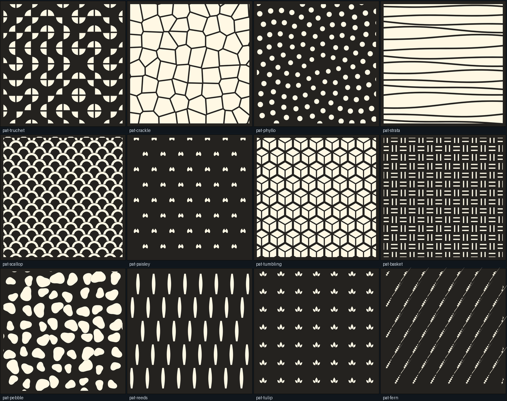
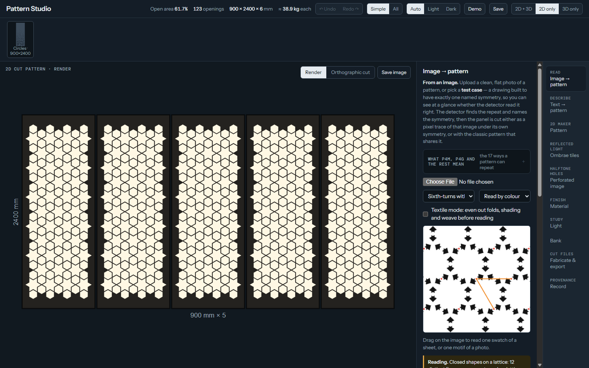

from a motif, a photograph or a sentence to a fabricable panel
Balreet Dhatt · UBC M.Arch Live tool: open it One HTML file. No build step, no server.

← → or Space to move · T switches light and dark
01 · Title
Background · how it is done today
Seven steps, one vendor, and the meaning travels in one head
Person stepSoftware step1Pain pointWhere a tool stops
02 · Background
Case study · four families of existing tools, studied as workflows
Each family stops short of the designer's hands
Ombrae™, OpticalTile™ and Sculptural Imaging™ are marks of Ombrae Studios Inc. and Keith Panel Systems; ImageWall is Zahner's; Ocular™ is Imark Metal's. Pattern Studio is an independent reconstruction of the principles for coursework, not their process or software.
03 · Case study
Opportunities · what AI brings, and what it must not be asked for
The model reads and proposes. Code builds and checks. The person decides.
What AI changes
A sentence becomes settings you can audit.
A picture can be asked for, then built.
A reviewer that never tires: benches and agents, daily.
What it does not do
It does not decide what a motif means.
It does not make the geometry; code does.
It does not replace the fabricator's judgment.
04 · Opportunities
Proposal · the tool as built, October 2026 · one HTML page
Three ways in, three panel kinds, one record
05 · Proposal
The demo · live click-through, with the recording as backup
What it does today

Image → pattern. The p6m test case, read and named.
LoRA cultural-pattern papers. “A Lightweight Diffusion Framework for Cultural Pattern Generation Using LoRA” (JFBI); “LoRA-Based Pattern Generation for Yi Ethnic Embroidery” (ACM, 2025)
ARCH 540. Session 4, Agents: demo notes (course material). Pattern Studio: link, README and CLAUDE.md in the project folder.
Attribution. Ombrae™, OpticalTile™ and Sculptural Imaging™ are marks of Ombrae Studios Inc. and Keith Panel Systems; ImageWall is Zahner's; Ocular™ is Imark Metal's. Pattern Studio is an independent reconstruction of the principles for coursework, not their process or software.